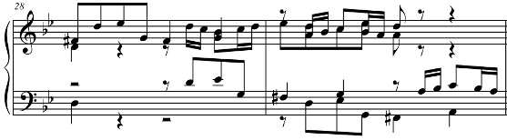
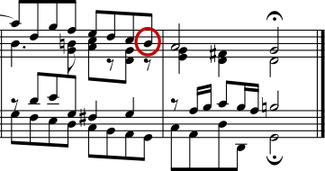

| [ << Incisione musicale ] | [Inizio][Contenuti][Indice][ ? ] | [ Bibliografia >> ] | ||
| [ < Perché lavorare così duramente? ] | [ Su : Incisione musicale ] | [ Concorsi di bellezza > ] | ||
1.3 Incisione automatizzata
Qui descriviamo ciò che serve per creare un software in grado di simulare l’aspetto degli spartiti incisi: un metodo di descrizione della buona formattazione al computer e numerosi confronti dettagliati con incisioni effettivamente esistenti.
| Concorsi di bellezza | ||
| Miglioramento per analisi comparativa | ||
| Mettere le cose a posto |
| [ << Incisione musicale ] | [Inizio][Contenuti][Indice][ ? ] | [ Bibliografia >> ] | ||
| [ < Incisione automatizzata ] | [ Su : Incisione automatizzata ] | [ Miglioramento per analisi comparativa > ] | ||
Concorsi di bellezza
In che modo noi decidiamo veramente sulla formattazione? In altre parole: quale delle tre configurazioni seguenti dovremmo scegliere per avere la legatura migliore?
![[image of music]](../b8/lily-0179c477.png)
Esistono pochi libri sull’arte di incidere la musica, i quali, purtroppo, si limitano a fornire alcune semplici regole generali e qualche esempio. Da esse si può imparare qualcosa, ma sempre troppo poco per mettere a punto un algoritmo implementabile senza troppa fatica in un computer: seguendole, le eccezioni da codificare a mano sarebbero ancora troppe. Analizzare tutti questi casi è un lavoro enorme, e spesso nemmeno tutti vengono contemplati:

(Fonte: Ted Ross, The Art of Music Engraving)
Anziché cercare di scrivere regole di formattazione dettagliate per ogni situazione possibile, dobbiamo solo descrivere gli obiettivi in modo sufficientemente completo da permettere a LilyPond di giudicare da solo l’attrattiva delle diverse possibilità. Poi, per ogni configurazione calcoliamo un punteggio di bruttezza e scegliamo quella meno brutta.
Per esempio, qui sotto mostriamo tre possibilità per una legatura, a ciascuna delle quali LilyPond ha assegnato un punteggio in ‘punti di bruttezza’. Il primo esempio ottiene 15,39 punti perché la legatura attraversa una delle teste delle note:
![[image of music]](../5d/lily-afb29edc.png)
Il secondo è più bello, ma la legatura non comincia o finisce sulle teste delle note. Ottiene 1,71 punti a sinistra e 9,37 punti a destra, più altri 2 punti a causa del fatto che la legatura ascende mentre la melodia discende, per un totale di 13,08 punti di bruttezza:
![[image of music]](../8a/lily-1a506dd8.png)
La legatura finale ottiene 10,04 punti per il vuoto a destra e 2 punti per la pendenza verso l’alto, ma è la più attraente delle tre configurazioni, e così LilyPond sceglie questa:
![[image of music]](../83/lily-7d0e74a1.png)
Questa tecnica è del tutto generale e viene adoperata per prendere decisioni ottimali in merito alla configurazione dei gambi delle note, delle legature di valore e dei punti negli accordi, nelle interruzioni di rigo e di pagina. Si può giudicare la bontà di queste decisioni confrontandole con incisioni effettivamente esistenti.
| [ << Incisione musicale ] | [Inizio][Contenuti][Indice][ ? ] | [ Bibliografia >> ] | ||
| [ < Concorsi di bellezza ] | [ Su : Incisione automatizzata ] | [ Mettere le cose a posto > ] | ||
Miglioramento per analisi comparativa
Gli spartiti generati da LilyPond sono migliorati gradualmente nel tempo e continuano a migliorare grazie al confronto con quelli incisi a mano.
Per esempio, qui sotto si vede una riga di un brano di riferimento preso da un’edizione incisa (Bärenreiter BA320):

e qui la stessa citazione realizzata con una vecchissima versione di LilyPond (versione 1.4, maggio 2001):

La musica prodotta da LilyPond 1.4 è senza dubbio leggibile, ma un confronto serrato con lo spartito precedente ha mostrato numerosi errori nei dettagli di formattazione:

- c’è troppo spazio prima dell’indicazione di tempo
- i gambi delle note con travature sono troppo lunghi
- la seconda e la quarta misura sono troppo strette
- la legatura ha un aspetto imbarazzante
- le indicazioni di trillo sono troppo grandi
- i gambi sono troppo sottili
(Mancavano anche due teste di note, alcune indicazioni editoriali e c’era un’altezza errata!)
Aggiustando le regole di formattazione e il disegno del font, lo spartito è notevolmente migliorato. Confrontate lo stesso spartito di riferimento e quello prodotto con la versione corrente di LilyPond (2.19.65):
![[image of music]](../64/lily-9356cf70.png)
Non è certo un clone dell’edizione di riferimento, ma è comunque molto più vicino a una qualità editoriale rispetto alla versione precedente.
| [ << Incisione musicale ] | [Inizio][Contenuti][Indice][ ? ] | [ Bibliografia >> ] | ||
| [ < Miglioramento per analisi comparativa ] | [ Su : Incisione automatizzata ] | [ Costruzione del software > ] | ||
Mettere le cose a posto
Siamo in grado di misurare l’abilità di LilyPond nel prendere decisioni sull’incisione della musica anche confrontando il suo prodotto con quello di un software commerciale. In questo caso abbiamo scelto Finale 2008, uno dei programmi di notazione musicale a pagamento più diffusi, in particolare nel Nord America. Sibelius è il suo più acerrimo rivale e sembra andare particolarmente bene nel mercato europeo.
Per il nostro confronto, abbiamo selezionato la Fuga in sol minore dal Libro I del Clavicembalo ben temperato BWV 861 di Bach, il cui soggetto d’apertura è
Abbiamo inciso le ultime sette misure del brano (n. 28–34) con Finale e con LilyPond. In questo punto della composizione, il soggetto ritorna in uno stretto a tre parti e conduce alla sezione finale. Abbiamo resistito alla tentazione di apportare qualunque modifica al prodotto predefinito di Finale, perché stiamo cercando di mostrare che cosa ciascun software riesce a fare da solo, senza interventi umani. Le uniche modifiche di rilievo introdotte sono state aggiustare le dimensioni della pagina per adattarla a quelle di questo saggio e forzare la musica in due soli sistemi per rendere più agevole il confronto. Per impostazione predefinita, invece, Finale avrebbe inciso due sistemi di tre misure ciascuno e un terzo sistema contenente la sola misura finale larga tutta la riga.
Molte delle differenze tra le due versioni si concentrano nelle misure 28–29, come mostriamo qui di seguito (Finale sta sopra):

![[image of music]](../b8/lily-f3c74e65.png)
Tra le carenze nell’output non modificato di Finale segnaliamo quanto segue.
- La maggior parte delle travature è troppo lontana dal rigo. Una travatura che punta verso il centro del rigo dovrebbe essere lunga circa un’ottava, ma gli incisori la abbreviano quando nella musica a più voci punta in senso contrario. Il sistema di travature di Finale può essere facilmente migliorato con il suo plug-in Patterson Beam, ma qui abbiamo scelto di omettere questa funzionalità.
- Finale non regola le posizioni delle teste delle note quando queste
vengono a trovarsi troppo vicine, il che rende la musica estremamente
difficile da leggere se voce superiore e inferiore invertono
temporaneamente la posizione:
![[image of music]](../7e/lily-f39b518d.png)
- Finale ha messo tutte le pause alla stessa altezza sul rigo. L’utente è libero di regolarle secondo la propria necessità, ma in nessun modo il programma tenta di prendere in considerazione il contenuto dell’altra voce. Il caso ha voluto che in quest’esempio non si verificassero vere e proprie collisioni tra note e pause, ma la cosa ha a che fare più con la posizione delle note che con quella delle pause. In altre parole, Bach merita più considerazione per evitare una collisione completa di quanta non gliene riservi Finale.
Con il confronto appena operato non intendiamo affatto suggerire che Finale non possa essere adoperato per produrre spartiti di qualità editoriale. Tutto il contrario: nelle mani di un utente esperto può farlo e in effetti lo fa, ma richiede abilità e tempo. Una delle differenze fondamentali tra LilyPond e i programmi di notazione musicale commerciali è che il primo spera di ridurre gli interventi umani al minimo, mentre gli altri puntano a fornire un’interfaccia attraente in cui operare questo tipo di modifiche.
Particolarmente eclatante è l’omissione da parte di Finale di un un bemolle a misura 33:

Il bemolle è richiesto per annullare il bequadro presente poco prima nella stessa misura, ma Finale l’ha tralasciato perché appartenente a un’altra voce. Così, oltre ad attivare il plug-in per le travature e a controllare la spaziatura delle teste delle note e delle pause, l’utente deve controllare anche gli accidenti nelle voci che si incrociano per scongiurare che errori di questo tipo facciano interrompere una prova.
Se vi interessa esaminare questi esempi più nel dettaglio, alla fine del saggio potete trovare l’estratto completo di sette misure insieme ad altre quattro incisioni pubblicate. Un attento esame dei frammenti rivela che tra le incisioni manuali esiste una certo intervallo di variazione tollerabile, ma anche che LilyPond regge il confronto abbastanza bene. L’output di LilyPond non è ancora privo di difetti, per esempio appare un po’ troppo aggressivo nell’accorciare i gambi, il che permette ancora un certo margine di manovra per sviluppi e messe a punto successive.
Naturalmente, la tipografia si basa sul giudizio di una forma da parte dell’uomo, il che rende le persone ancora insostituibili. Tuttavia si può automatizzare gran parte del lavoro noioso, e se LilyPond riesce a risolvere correttamente la maggior parte delle situazioni frequenti, il miglioramento rispetto al software in circolazione sarà enorme. Via via che gli anni passano, il programma può essere perfezionato per eseguire automaticamente un numero sempre più elevato di operazioni, così da rendere le sovrascritture manuali sempre meno indispensabili. Dove queste si rivelassero indispensabili, la struttura di LilyPond è stata progettata avendo in mente la flessibilità.
| [ << Incisione musicale ] | [Inizio][Contenuti][Indice][ ? ] | [ Bibliografia >> ] | ||
| [ < Miglioramento per analisi comparativa ] | [ Su : Incisione automatizzata ] | [ Costruzione del software > ] | ||
Altre lingue: English, deutsch, español, français, magyar.
About automatic language selection.